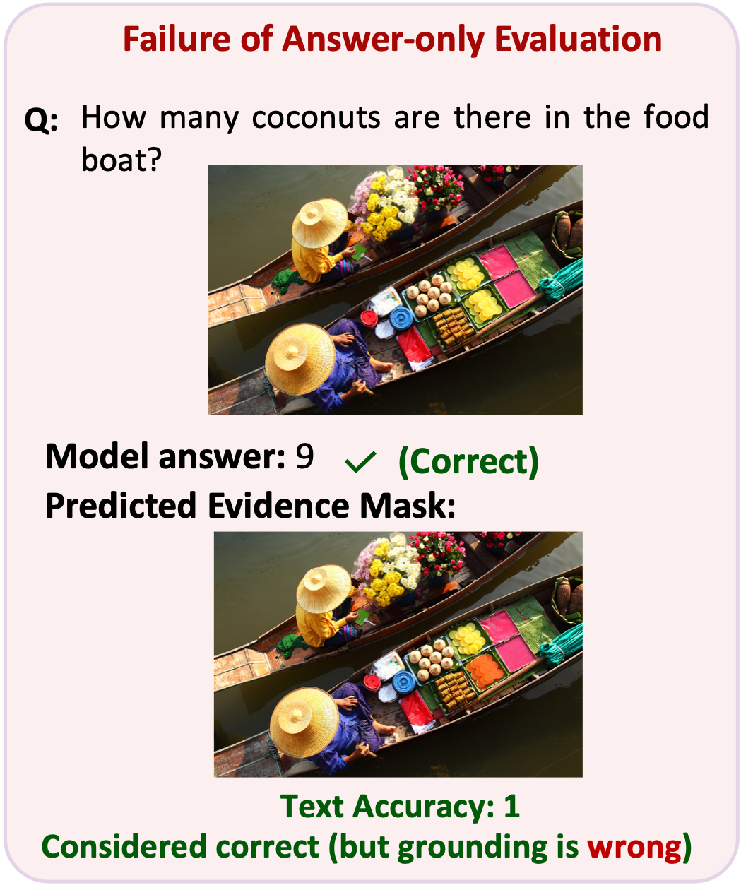
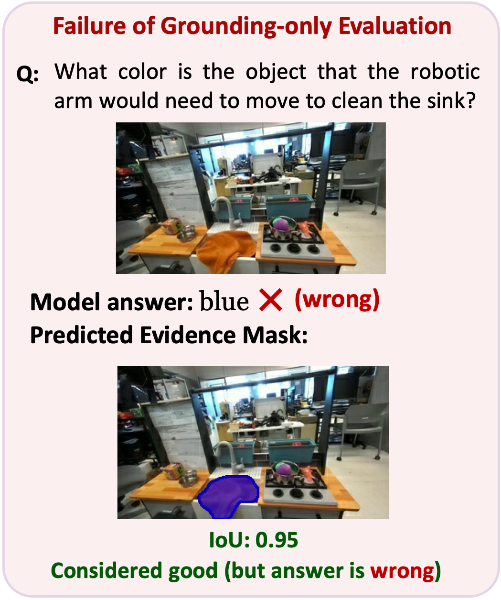
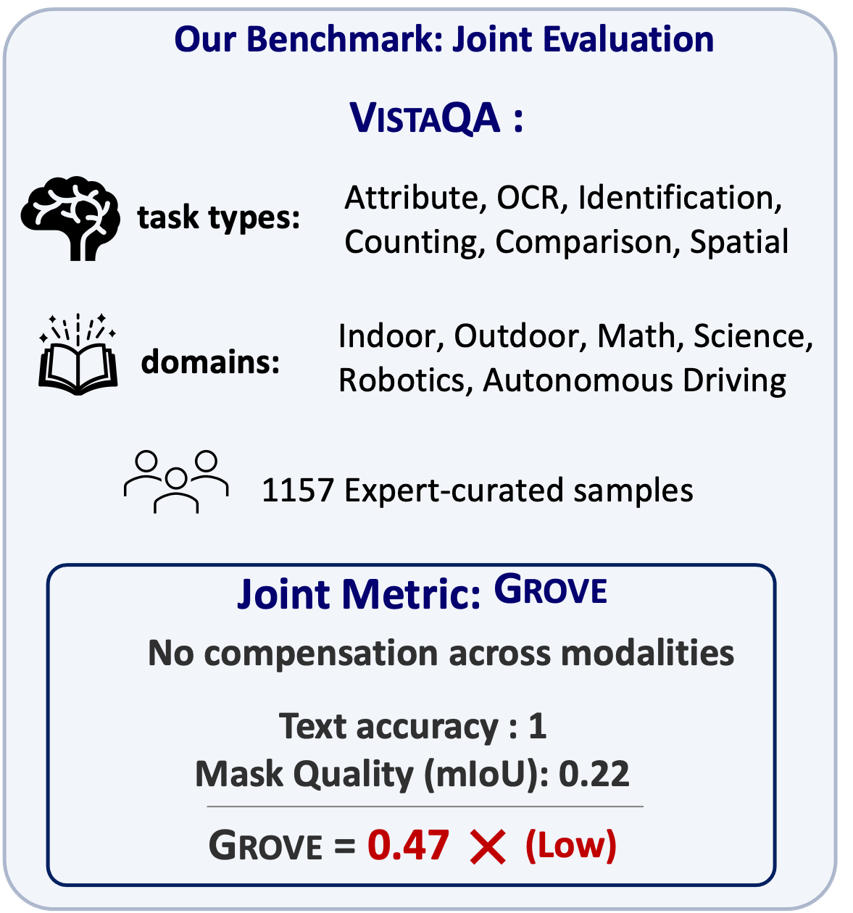
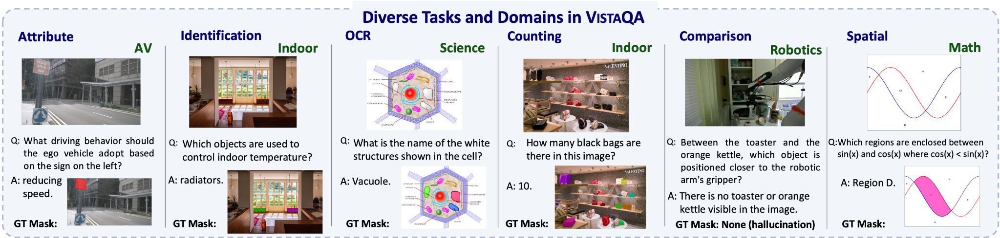
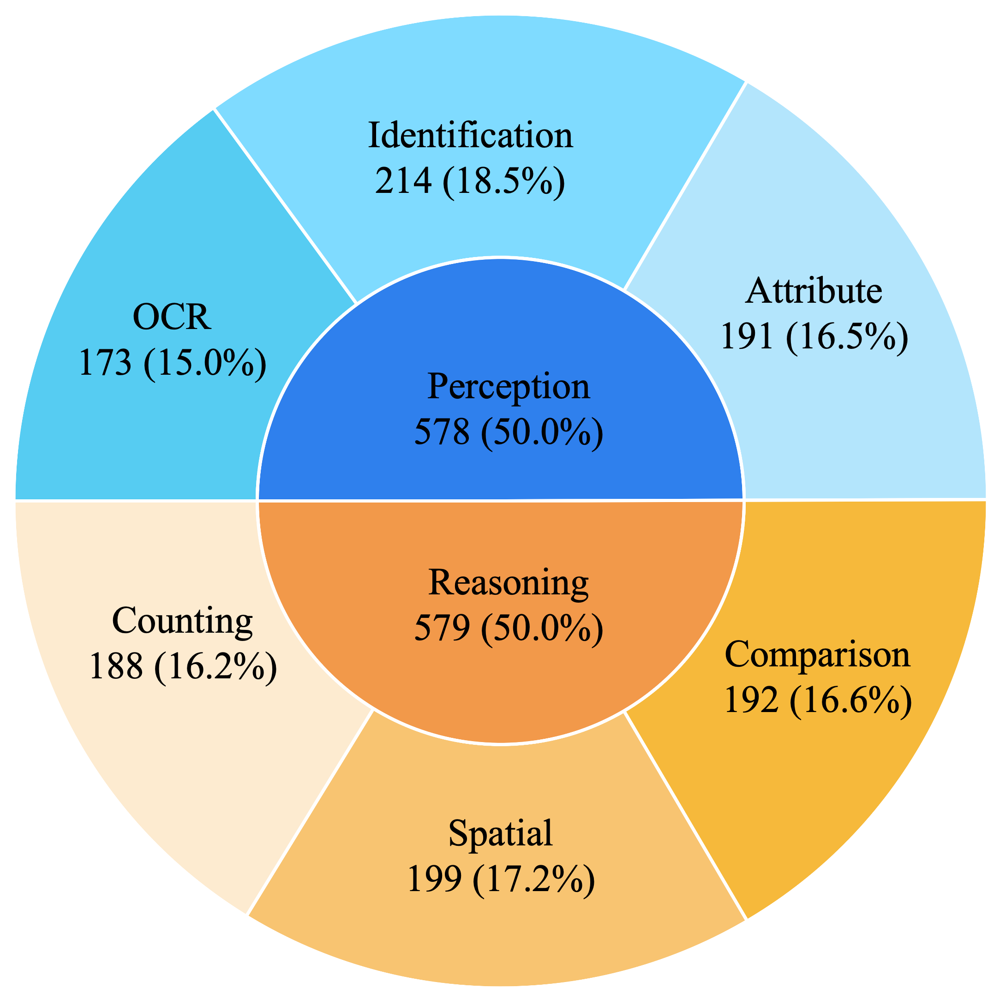
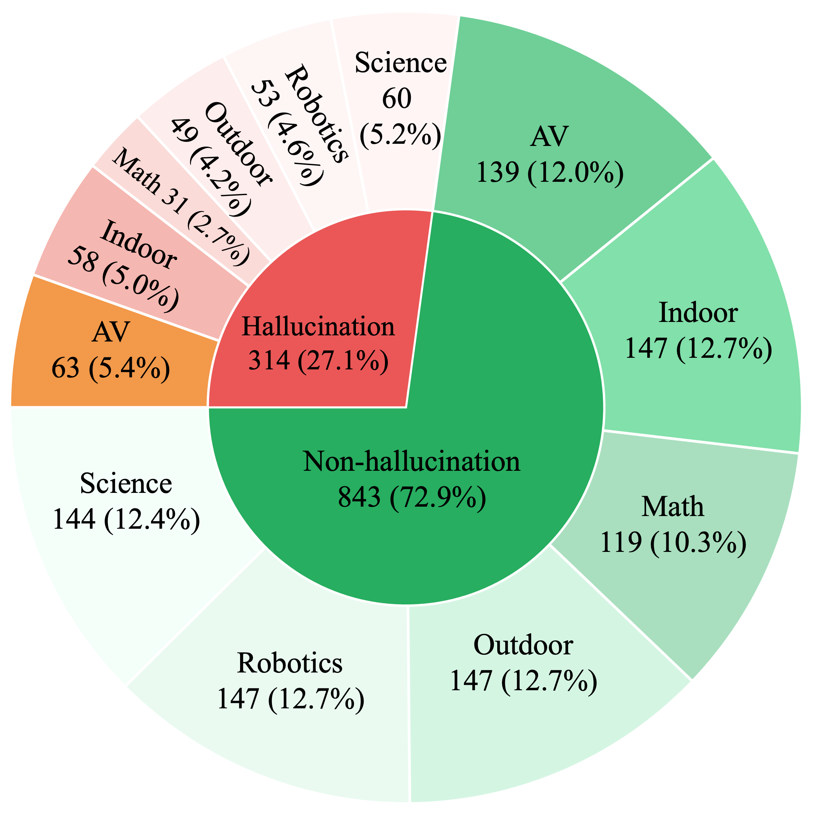
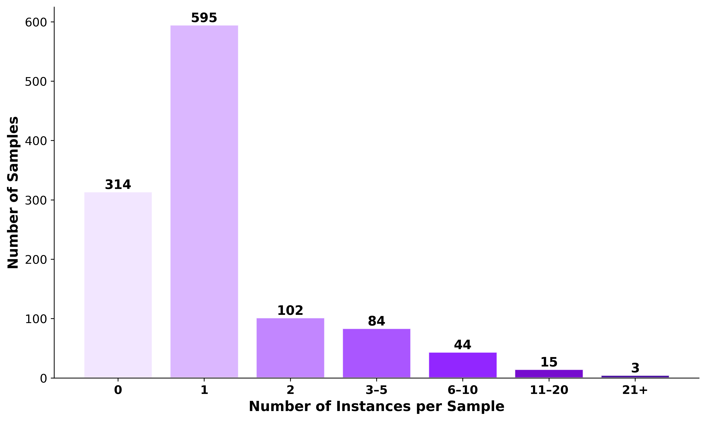
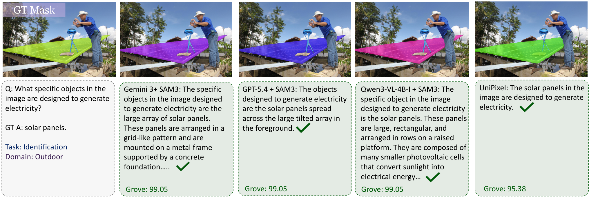

01
THE ANSWER-ONLY BLIND SPOT
Right answer, wrong evidence.
The count is correct, but the predicted mask misses the evidence. Text accuracy alone would overlook this failure.

Put your vision-language system to the test: evaluate answer correctness and pixel-level visual evidence with GROVE.
Correct answers can point to the wrong pixels—and correct masks can accompany wrong answers. VistaQA evaluates both together.
The count is correct, but the predicted mask misses the evidence. Text accuracy alone would overlook this failure.

An excellent segmentation mask cannot rescue an incorrect textual answer. Grounding quality alone misses the problem.

VistaQA combines free-form answer correctness and pixel-level evidence quality, so neither can compensate for the other.

Explore the GROVE metricSix task types span six visual domains, from everyday scenes and scientific diagrams to autonomous driving and robotics.

Even strong vision-language systems struggle when correct answers must be backed by the correct visual regions.
GPT-5.4-Thinking + SAM3 achieves the strongest overall GROVE score among evaluated systems.
See experimental results ↗Good textual accuracy and segmentation quality in isolation can hide mismatches on individual examples.
Over 27% of the benchmark tests whether models recognize absent entities and unanswerable queries.
Establishing a clear link between model predictions and the visual evidence that supports them is critical for transparency and reliability in multimodal reasoning, yet current multimodal large language model (MLLM) evaluations do not explicitly enforce this alignment. Existing benchmarks assess either textual answer correctness or pixel-level localization in isolation, leaving the coupling of reasoning and grounding an open challenge. We introduce VistaQA, a comprehensive benchmark for joint evaluation of free-form answer correctness and pixel-level evidence grounding in visual question answering. VistaQA comprises 1,157 expert-curated samples spanning six task types and six visual domains, ranging from direct perception to compositional and relational reasoning. VistaQA requires models to not only answer correctly, but to also provide precise segmentation masks that support their answers. It also includes hallucination-aware examples where no valid visual evidence exists. To support this enhanced evaluation, we introduce GROVE, a unified evaluation metric that enforces joint correctness by combining textual accuracy and grounding quality via a per-sample geometric mean, ensuring neither dimension can compensate for deficiencies in the other. Comprehensive experiments across grounding-aware models and hybrid pipelines with general-purpose MLLMs reveal that even the strongest systems achieve limited performance under GROVE, highlighting a substantial gap between answer accuracy and visual evidence alignment.



GROVE computes a joint score for each sample as the geometric mean of an epsilon-floored binary answer correctness score and an epsilon-floored mask quality score (mIoU). By coupling reasoning and evidence at the sample level, GROVE ensures that strong performance requires models to simultaneously provide both correct answers and precise supporting visual evidence.
Explore joint answer-and-evidence performance across 14 evaluated systems. GROVE rewards models only when their answers and visual grounding agree.
The top-performing system still leaves substantial room for better joint reasoning and grounding.
Performance varies notably across evaluation settings.
Compare tasks, visual domains, and hallucination-aware samples.
Click any column heading to sort models by that metric. Click again to reverse the order.
| 01GPT-5.4-T + SAM3MLLM + SAM3 | 45.53 | 53.62 | 44.73 | 44.16 | 38.86 | 52.21 | 38.93 |
| 02Qwen3-VL-4B-I + SAM3MLLM + SAM3 | 43.30 | 50.36 | 47.46 | 40.96 | 36.32 | 45.52 | 38.43 |
| 03Qwen3-VL-32B-I + SAM3MLLM + SAM3 | 42.72 | 48.41 | 46.37 | 42.14 | 35.91 | 45.72 | 37.41 |
| GPT-5.4 + SAM3MLLM + SAM3 | 41.50 | 48.22 | 40.43 | 41.33 | 35.62 | 47.06 | 35.86 |
| Gemini 3 + SAM3MLLM + SAM3 | 39.63 | 43.10 | 40.11 | 42.55 | 33.53 | 42.81 | 35.84 |
| VRT-RL | 29.02 | 34.92 | 28.74 | 27.43 | 24.44 | 29.94 | 28.01 |
| Sa2VA-8B | 25.74 | 26.79 | 30.44 | 25.36 | 22.87 | 20.46 | 28.36 |
| UniPixel-7B | 22.39 | 22.24 | 28.29 | 22.19 | 19.90 | 15.36 | 26.34 |
| TreeVGR-7B | 19.03 | 18.28 | 18.55 | 16.42 | 17.90 | 20.25 | 22.65 |
| SESAME-7B | 17.02 | 17.90 | 17.14 | 13.62 | 18.48 | 17.60 | 16.90 |
| LISA-7B | 15.47 | 15.16 | 16.92 | 12.44 | 15.29 | 16.56 | 16.23 |
| GLaMM-7B | 13.53 | 14.86 | 12.89 | 12.34 | 14.19 | 11.84 | 14.70 |
| LaSagnA-7B | 12.35 | 13.31 | 12.03 | 11.04 | 13.23 | 11.14 | 13.05 |
| Uground-7B | 11.78 | 10.95 | 11.69 | 11.15 | 11.57 | 12.15 | 13.22 |
Click any column heading to sort models by that metric. Click again to reverse the order.
| GPT-5.4-T + SAM3MLLM + SAM3 | 44.65 | 47.89 | 45.39 | 45.92 | 41.51 | 53.18 | 47.01 | 39.24 |
| GPT-5.4 + SAM3MLLM + SAM3 | 43.28 | 36.72 | 42.06 | 46.05 | 28.99 | 53.43 | 39.87 | 35.54 |
| Qwen3-VL-32B-I + SAM3MLLM + SAM3 | 37.63 | 56.41 | 44.27 | 47.63 | 23.23 | 58.40 | 40.09 | 37.85 |
| Qwen3-VL-4B-I + SAM3MLLM + SAM3 | 36.81 | 60.72 | 43.64 | 46.84 | 27.37 | 59.39 | 41.78 | 36.80 |
| Gemini 3 + SAM3MLLM + SAM3 | 33.48 | 56.14 | 39.37 | 39.40 | 31.40 | 48.42 | 37.15 | 39.87 |
| VRT-RL | 32.09 | 20.79 | 29.61 | 33.06 | 24.68 | 30.76 | 27.74 | 27.27 |
| Sa2VA-8B | 31.01 | 11.58 | 22.64 | 24.03 | 14.87 | 36.87 | 25.10 | 28.09 |
| UniPixel-7B | 25.98 | 12.75 | 21.76 | 23.20 | 12.90 | 28.87 | 21.02 | 24.15 |
| TreeVGR-7B | 17.68 | 22.66 | 18.41 | 20.45 | 12.70 | 23.51 | 19.76 | 17.78 |
| GLaMM-7B | 14.48 | 10.96 | 12.82 | 13.75 | 11.13 | 15.70 | 13.43 | 13.72 |
| LISA-7B | 14.01 | 19.39 | 16.01 | 16.41 | 12.15 | 16.50 | 15.97 | 14.95 |
| LaSagnA-7B | 13.12 | 10.28 | 11.31 | 12.18 | 11.07 | 14.05 | 12.09 | 13.07 |
| SESAME-7B | 12.17 | 30.04 | 17.20 | 17.68 | 11.05 | 20.77 | 15.92 | 17.97 |
| Uground-7B | 10.94 | 14.03 | 11.32 | 10.74 | 10.78 | 11.79 | 13.40 | 12.38 |
What happens when answers and supporting regions agree—or fail independently? Explore five outcome categories using examples from the paper.
Choose an outcome to browse four representative examples.

@article{nasrazadani2026vistaqa,
title={VISTAQA: Benchmarking Joint Visual Question Answering and Pixel-Level Evidence},
author={Nasr Azadani, Mozhgan and Wang, Yimu and Zhu, Yongpeng and Chen, Lihong and Ganai, Milan and Sedwards, Sean and Pavone, Marco and Czarnecki, Krzysztof},
year={2026},
note={arXiv:2605.20676}
}